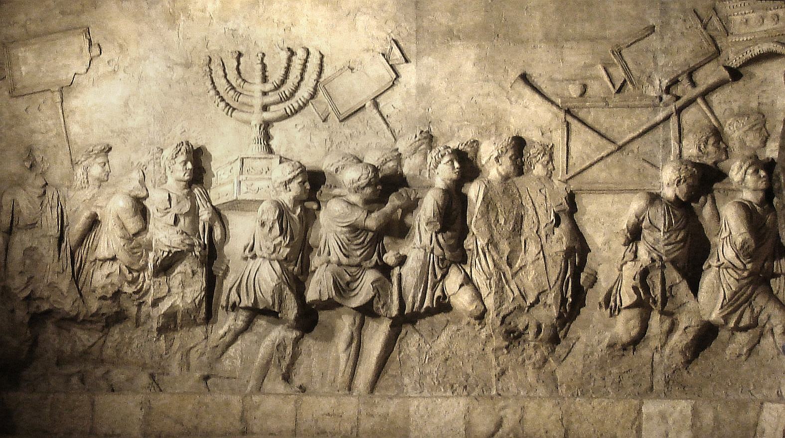
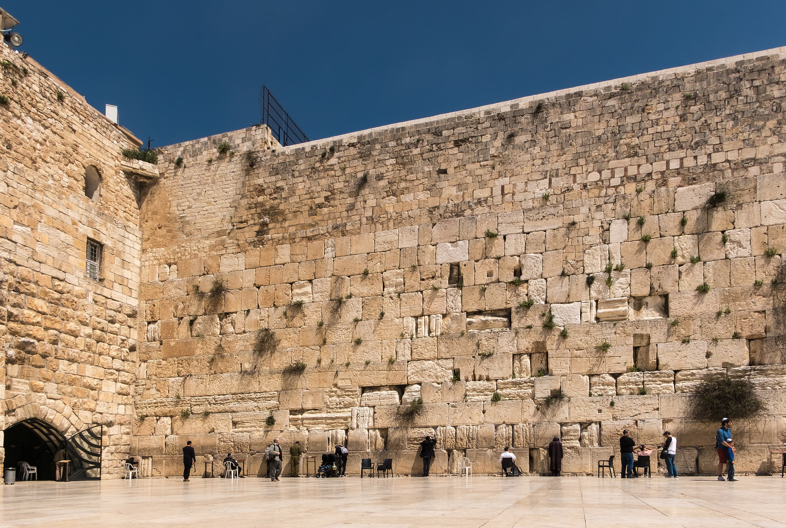

Roma quemó el Segundo Templo, y con él pareció terminar el judaísmo. En cambio, de aquellas cenizas se levantaron dos religiones que cambiarían el mundo: el judaísmo rabínico y el cristianismo.
Llegamos al final de la serie, y del gran arco histórico de todo el blog. La tensión entre Judea y Roma que vimos crecer estalló en el año 66 d.C. en una revuelta abierta. Cuatro años después, la respuesta de Roma sería total y definitiva. El año 70 d.C. es, junto al exilio babilónico, la fecha más decisiva de la historia religiosa de Israel —el día en que un mundo terminó y dos nuevos empezaron—.
Décadas de agravios acumulados —impuestos aplastantes, gobernadores romanos corruptos e insensibles, provocaciones religiosas, la agitación de los zelotes— hicieron saltar la chispa en el 66 d.C. Judea se levantó en armas contra el Imperio romano. Al principio, sorprendentemente, los rebeldes lograron victorias. Pero desafiar a Roma era desafiar a la maquinaria militar más poderosa del mundo.
Roma envió a sus mejores generales, Vespasiano y luego su hijo Tito, con varias legiones. Aplastaron la revuelta metódicamente, región por región, hasta cercar Jerusalén. En el verano del 70 d.C., tras un asedio brutal, las legiones tomaron la ciudad, la arrasaron y quemaron el Segundo Templo. Según la tradición, ocurrió el 9 de Av —la misma fecha en que, seis siglos antes, Babilonia había destruido el Primero—.

Es difícil exagerar lo que significó la pérdida del Templo. Durante mil años, el culto judío había girado en torno a él: los sacrificios, las peregrinaciones, el sacerdocio, el calendario festivo. Sin Templo, todo ese sistema religioso quedó de golpe imposible. Los saduceos, la aristocracia sacerdotal ligada al Templo, simplemente desaparecieron. Los zelotes fueron aniquilados (Masada, su último bastión, cayó en el 73). Los esenios se esfumaron.
De la rica diversidad del judaísmo del Segundo Templo —fariseos, saduceos, esenios, zelotes, los primeros seguidores de Jesús— la catástrofe solo dejó en pie, con futuro, a dos grupos. Y de ellos nacerían las dos religiones que aún hoy configuran el mundo.

Este es el momento culminante de todo el blog. Del tronco del judaísmo del Segundo Templo, herido de muerte en el 70 d.C., brotaron dos ramas que sobrevivirían y florecerían —cada una reinventando la fe sin Templo a su manera—:
Fíjate en la simetría con el exilio babilónico, que vimos en la serie de los imperios. Ambas veces, la destrucción del Templo forzó una reinvención creativa: entonces nació el monoteísmo maduro y la religión "portátil"; ahora nacen el judaísmo rabínico y el cristianismo. En la historia de Israel, las catástrofes son también partos.
En el 70 d.C. Roma destruyó el Segundo Templo y con él el sistema religioso de mil años. Pero de esa catástrofe surgieron dos religiones: el judaísmo rabínico (de los fariseos, centrado ahora en la Torá y la sinagoga) y el cristianismo (de los seguidores de Jesús, que se expandió por el mundo romano). Ambas aprendieron a vivir sin Templo.
"Grecia y Roma" empezó con Alejandro trayendo una cultura nueva, y termina con Roma cerrando una era. Entre ambos, cuatro siglos en los que el judaísmo se enfrentó al mundo clásico —lo absorbió, lo resistió, se rebeló contra él, y finalmente fue transformado por él—. De esa larga fricción salió el mundo religioso que aún habitamos: dos de las tres grandes tradiciones abrahámicas quedaron aquí definidas para siempre.
Y con esto, el blog ha recorrido el camino completo: desde El, el dios cananeo de la primera serie, hasta las dos religiones que nacieron de las cenizas del Templo de Herodes. De la asamblea de dioses del Bronce a las fes del mundo romano. Toda una historia de cómo lo sagrado se transforma, capa sobre capa, imperio tras imperio.
Roma quemó el Templo, y de sus cenizas se alzaron dos religiones que aún hoy dan forma al mundo.
Grecia trajo la lengua; Roma, el final de una era. Entre ambas, el judaísmo se bifurcó para siempre en dos caminos: la Torá de los rabinos y el evangelio de los cristianos.
La gran revuelta judía (66–73 d.C.), el asedio de Jerusalén y la destrucción del Segundo Templo en el 70 d.C. por Tito son hechos históricos firmes, documentados extensamente por el testigo Flavio Josefo y por la arqueología (incluido el Arco de Tito en Roma). La caída de Masada (c. 73/74 d.C.) es igualmente histórica.
El surgimiento del judaísmo rabínico a partir del fariseísmo, con el papel de Yavne y Johanan ben Zakkai, es el marco aceptado, aunque los detalles (como el episodio del ataúd) proceden de tradiciones rabínicas posteriores y se presentan como tales. La separación gradual entre judaísmo y cristianismo (el "parting of the ways") es objeto de investigación matizada: fue un proceso de décadas, no un corte instantáneo en el 70.
Este artículo describe la historia de la formación del judaísmo rabínico y el cristianismo con respeto por ambas tradiciones vivas, sin arbitrar cuestiones de fe. Cierra el recorrido de este blog.